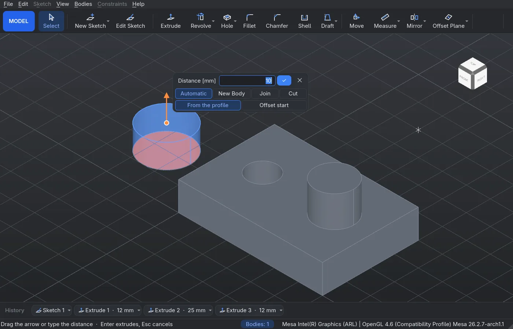
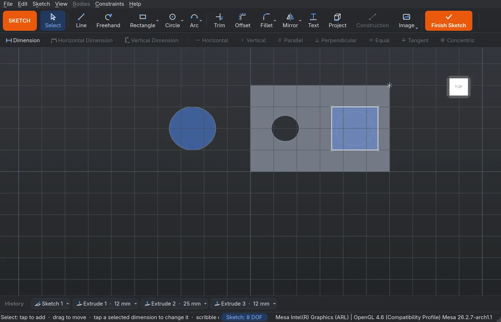
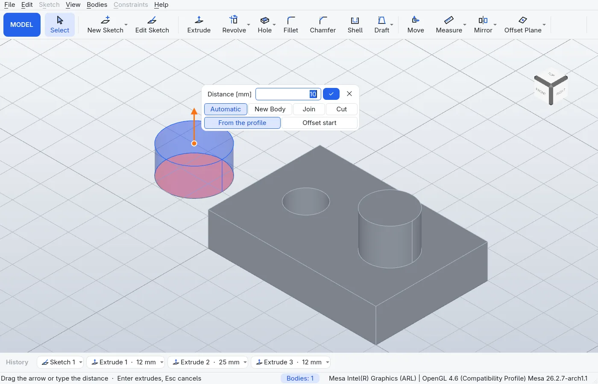
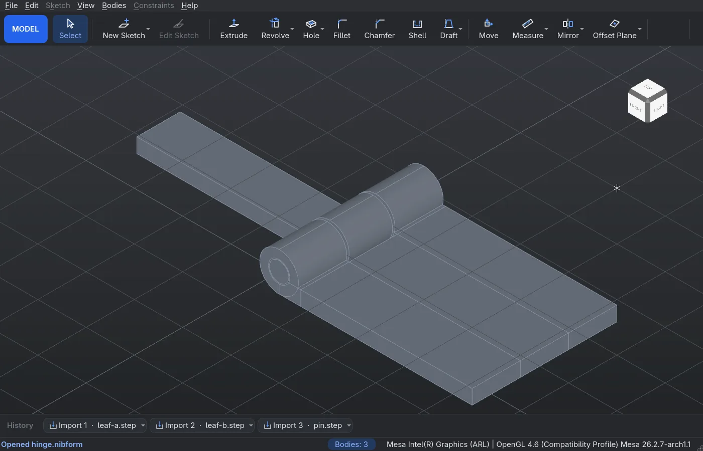

CAD you draw
with a pen.
CAD, który rysujesz
rysikiem.
Sketch freehand, let constraints tidy it up, then push and pull it into solid parts. A free, native parametric CAD app made for stylus laptops and tablets, and just as quick with a mouse.
Szkicuj odręcznie, pozwól więzom to uporządkować, a potem wyciągnij z tego bryły. Darmowy, natywny CAD parametryczny dla laptopów i tabletów z rysikiem, równie szybki z myszą.

Sketch
Szkic
Draw roughly. Get clean geometry.
Rysuj z grubsza. Dostań czystą geometrię.
Strokes become lines, rectangles, circles and arcs. Snapping leaves relations behind, and a solver keeps them true as you drag.
Pociągnięcia stają się liniami, prostokątami, okręgami i łukami. Przyciąganie zostawia więzy, a solver pilnuje ich, gdy przeciągasz.
- Lines, arcs, splines, slots, polygons, ellipses, text
- Trim, offset, fillet, mirror and patterns
- Press D to dimension; fully defined turns green
- Scribble over something to delete it
- Linie, łuki, splajny, fasolki, wielokąty, elipsy, tekst
- Przycinanie, odsunięcie, zaokrąglenia, lustro i szyki
- D wymiaruje; w pełni określone robi się zielone
- Zamaż coś, żeby to usunąć

Model
Bryła
Tap a region, pull the arrow.
Dotknij obszaru, pociągnij strzałkę.
Every step lands on the history bar. Double-tap one to change it, and everything after it rebuilds in the background.
Każdy krok trafia na pasek historii. Stuknij dwa razy, by go zmienić, a reszta przeliczy się w tle.
- Extrude, revolve, sweep, loft, holes, threads
- Fillet, chamfer, shell, draft, ribs, emboss
- Automatic join, cut or new body
- Named parameters, expressions and configurations
- Wyciągnięcie, obrót, przeciąganie, profile, otwory, gwinty
- Zaokrąglenie, faza, skorupa, pochylenie, żebra, wytłoczenie
- Automatyczne dodanie, odjęcie albo nowa bryła
- Nazwane parametry, wyrażenia i konfiguracje

Assemble & document
Złożenia i dokumentacja
From one part to a working mechanism.
Od jednej części do działającego mechanizmu.
Join parts with revolute, slider or ball joints, drag them through their range, and check for collisions. Then make a drawing a workshop can use.
Łącz części przegubami obrotowymi, suwakami albo kulowymi, przeciągaj je w zakresie ruchu i sprawdzaj kolizje. Potem zrób rysunek, z którym poradzi sobie warsztat.
- Joints, limits, interference, exploded views
- Views, sections, dimensions, thread callouts
- Balloons and a parts list; PDF, SVG, print
- STEP export that keeps the structure
- Przeguby, ograniczenia, kolizje, widoki rozstrzelone
- Rzuty, przekroje, wymiary, oznaczenia gwintów
- Odnośniki i lista części; PDF, SVG, druk
- Eksport STEP z zachowaną strukturą

Everything in the box
Wszystko w zestawie
A complete CAD workflow
Pełny proces CAD
Sketch, model, bend, assemble, draw, script and export, all in one app.
Szkic, bryła, blacha, złożenie, rysunek, skrypty i eksport w jednej aplikacji.
Pen first
Rysik przede wszystkim
A radial menu under the pen, freehand shape recognition, scribble to delete, an eraser that trims, hover previews and palm rejection.
Menu kołowe pod rysikiem, rozpoznawanie kształtów, zamazanie usuwa, gumka przycina, podgląd przed dotknięciem i odrzucanie dłoni.
Constraints & dimensions
Więzy i wymiary
Horizontal, parallel, tangent, symmetric and more, plus lengths, angles and diameters that take expressions like width / 2.
Poziomo, równolegle, stycznie, symetrycznie i więcej, a do tego długości, kąty i średnice, które przyjmują wyrażenia jak width / 2.
Solid features
Operacje na bryłach
Extrude, revolve, sweep, loft, holes, threads, fillets, chamfers, shells, drafts, ribs, mirrors and patterns.
Wyciągnięcie, obrót, przeciąganie, profile, otwory, gwinty, zaokrąglenia, fazy, skorupy, pochylenia, żebra, lustra i szyki.
Parametric history
Historia parametryczna
Change any step and the model follows. Rebuilds run in the background and only from what changed, so undo is instant.
Zmień dowolny krok, a model się dostosuje. Przeliczanie idzie w tle i tylko od zmiany, więc cofanie jest natychmiastowe.
Parameters
Parametry
A table of named values, expressions with units, and configurations like Small and Large, to and from CSV.
Tabela nazwanych wartości, wyrażenia z jednostkami i konfiguracje jak Mała i Duża, z i do CSV.
Assemblies
Złożenia
Six joint types, motion with limits, interference checks, exploded views and a parts list.
Sześć rodzajów przegubów, ruch z ograniczeniami, wykrywanie kolizji, widoki rozstrzelone i lista części.
Sheet metal
Blacha
Base and edge flanges, hems, tabs, reliefs, shelled parts converted; the flat pattern kept up to date, as DXF for the laser cutter.
Kołnierze bazowe i krawędziowe, zawinięcia, występy, podcięcia, konwersja skorup; aktualne rozwinięcie, w DXF do lasera.
Python scripting
Skrypty w Pythonie
A console, a Python API to sketches, features and parameters, generated features that stay editable, macros, plugins and headless batch runs.
Konsola, API w Pythonie do szkiców, operacji i parametrów, generowane operacje, które da się dalej edytować, makra, wtyczki i zadania wsadowe bez okna.
Technical drawings
Rysunki techniczne
Standard and section views, dimensions tied to the model, notes, A4–A2 sheets; PDF, SVG and print at real size.
Rzuty i przekroje, wymiary związane z modelem, notatki, arkusze A4–A2; PDF, SVG i druk w skali 1:1.
Import & export
Import i eksport
STEP, IGES and STL in; STEP, IGES, STL and 3MF out; DXF and SVG sketches. Projects are readable JSON.
Wczytuje STEP, IGES i STL; zapisuje STEP, IGES, STL i 3MF; szkice DXF i SVG. Projekty to czytelny JSON.
Made for tablets
Stworzony dla tabletów
Tablet mode with big buttons and a keypad, touch gestures, and a layout that follows screen rotation.
Tryb tabletu z dużymi przyciskami i klawiaturą numeryczną, gesty dotykowe i układ, który podąża za obrotem ekranu.
Quick start
Szybki start
A part in four steps
Część w czterech krokach
With a pen, a finger or a mouse, and keyboard shortcuts you can change.
Rysikiem, palcem albo myszą, ze skrótami klawiszowymi, które możesz zmienić.
New sketch Shift+S
Nowy szkic Shift+S
On the ground or on a body's face. The view turns to face it.
Na podłożu albo na ścianie bryły. Widok obraca się na wprost niego.
Draw & dimension
Rysuj i wymiaruj
L R C A to draw, or freehand. D to dimension.
L R C A rysują, albo odręcznie. D wymiaruje.
Finish Ctrl+Enter
Zamknij Ctrl+Enter
Closed areas become regions you can tap.
Zamknięte obszary stają się regionami, których można dotknąć.
Extrude E
Wyciągnij E
Pull the arrow or type a value, Enter. Round it off with Shift+F.
Pociągnij strzałkę albo wpisz wartość, Enter. Zaokrąglij przez Shift+F.
Download
Pobierz
Get Nibform
Zainstaluj Nibform
Free, with no account and no telemetry. Every install adds a menu entry, opens .nibform files, and autosaves your work every minute.
Za darmo, bez konta i bez telemetrii. Każda instalacja dodaje wpis w menu, otwiera pliki .nibform i co minutę zapisuje pracę.
Linux
Your systemTwój system- AppImageAny distribution with glibc 2.35+.
chmod +xand run. Każda dystrybucja z glibc 2.35+.chmod +xi uruchom. - Flatpak
flatpak install --user Nibform-*.flatpak - Arch Linux (AUR)
yay -S nibform
Windows
Your systemTwój system- InstallerInstalatorThe
-setup.exe, for Windows 10 and 11. Plik-setup.exe, dla Windows 10 i 11. - PortableWersja przenośnaThe
.zip: unpack and run. Plik.zip: rozpakuj i uruchom. - Not signed yetJeszcze niepodpisanySmartScreen asks once: More info → Run anyway. SmartScreen zapyta raz: Więcej informacji → Uruchom mimo to.
macOS
Your systemTwój system- Disk imageObraz dyskuThe
.dmg, for Apple silicon. Plik.dmg, dla Apple silicon. - Not notarized yetJeszcze bez notaryzacjiThe first time, open it with right-click → Open. Za pierwszym razem otwórz prawym przyciskiem → Otwórz.
Build from sourceZbuduj ze źródeł
# dependencies (Arch) sudo pacman -S --needed qt6-base qt6-svg qt6-tools opencascade eigen cmake ninja # build, test, install git clone https://github.com/Vilkasek/nibform.git cd nibform cmake -S . -B build -G Ninja -DCMAKE_INSTALL_PREFIX=/usr cmake --build build ctest --test-dir build sudo cmake --install build
Other systems need Qt 6 (Widgets, OpenGL, Svg, PrintSupport, LinguistTools), OpenCASCADE 7.9, Eigen 3 and CMake 3.24+. A Flatpak manifest is in packaging/flatpak.
Inne systemy potrzebują Qt 6 (Widgets, OpenGL, Svg, PrintSupport, LinguistTools), OpenCASCADE 7.9, Eigen 3 i CMake 3.24+. Manifest Flatpaka jest w packaging/flatpak.
Controls
Sterowanie
The view follows whatever you hold
Widok reaguje na to, czego używasz
Every shortcut can be changed under Edit → Keyboard Shortcuts.
Każdy skrót można zmienić w Edycja → Skróty klawiszowe.
PenRysik
The tip draws. A long press or a button click opens the radial menu; with the button held, it orbits. The eraser trims.
Końcówka rysuje. Długie przytrzymanie albo kliknięcie przycisku otwiera menu kołowe; z wciśniętym przyciskiem obraca widok. Gumka przycina.
FingersPalce
One orbits, two pan and pinch-zoom. A two-finger tap undoes, three fingers redo.
Jeden obraca, dwa przesuwają i przybliżają. Stuknięcie dwoma cofa, trzema ponawia.
Mouse & touchpadMysz i touchpad
Right button orbits, middle pans, the wheel zooms about the pointer. Scrolling can orbit instead, touchpad style.
Prawy przycisk obraca, środkowy przesuwa, kółko przybliża do kursora. Przewijanie może też obracać, jak na touchpadzie.
KeyboardKlawiatura
1–6 standard views, Ctrl+1 isometric, F fit. All of them glide.
1–6 widoki standardowe, Ctrl+1 izometria, F dopasuj. Wszystko płynnie.
Roadmap
Plan
Moving fast, in the open
Rozwijany szybko i otwarcie
Nineteen milestones done. Versions and sharing are next.
Dziewiętnaście kamieni milowych za nami. Następne są wersje i współdzielenie.
Pick up the pen.
Weź rysik do ręki.
Nibform is free and open source. Try it, report what breaks, and help shape what comes next.
Nibform jest wolny i otwarty. Wypróbuj, zgłoś, co nie działa, i pomóż zdecydować, co dalej.